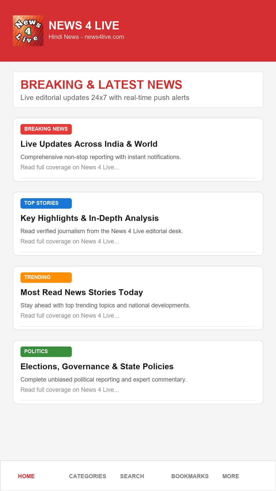

Connecting to live WordPress API (news4live.com)...
News 4 Live Exclusive
निष्पक्ष, निर्भीक, सटीक समाचार · बृजभूमि एवं राष्ट्रीय पोर्टल
Connecting to live WordPress API (news4live.com)...

Experience lightning-fast Hindi news with native smooth scrolling, Room database offline bookmarks, 50MB OkHttp disk caching, and real-time push notifications powered directly by the WordPress REST API.